Anotações das Aulas
Bem vindo a página de overview das aulas do PromovaWeb. Aqui você pode encontrar as anotações feitas em cada uma das aulas
MODULO 01. Configuração da VPS (OPSVPS)
-
Aula 01 - Visão Geral da Hetzner Cloud
Fazer uma conta na Hetzner
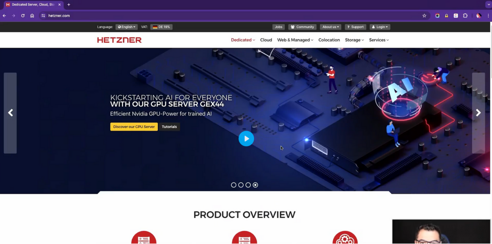 -
Aula 02 - Criando um Projeto na Hetzner
Faça um Novo Projeto
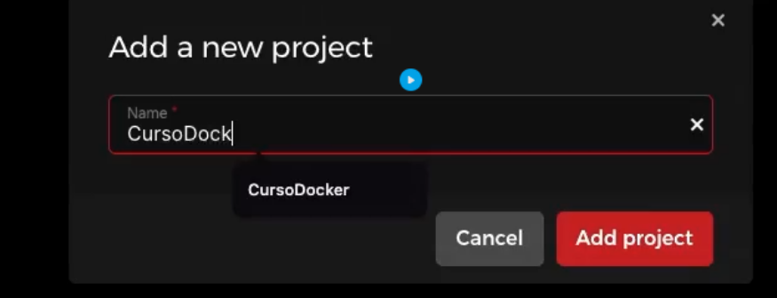Primeira coisa Criar um Ip Primário
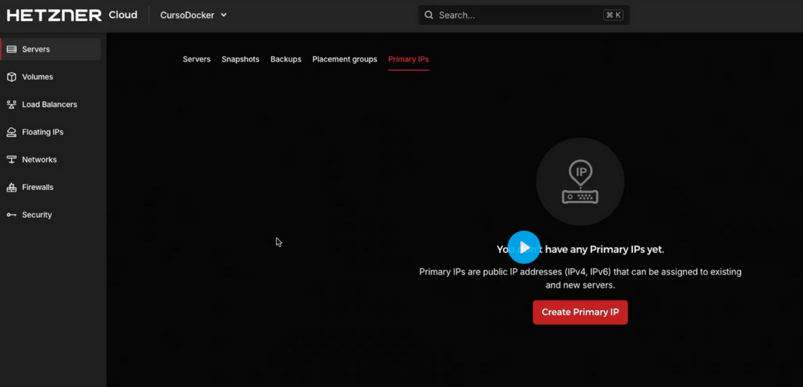Sempre Crie o IPv4 e Sempre escolha Ashburn, VA que é um servidor no Estados Unido, e nomeie seu ip
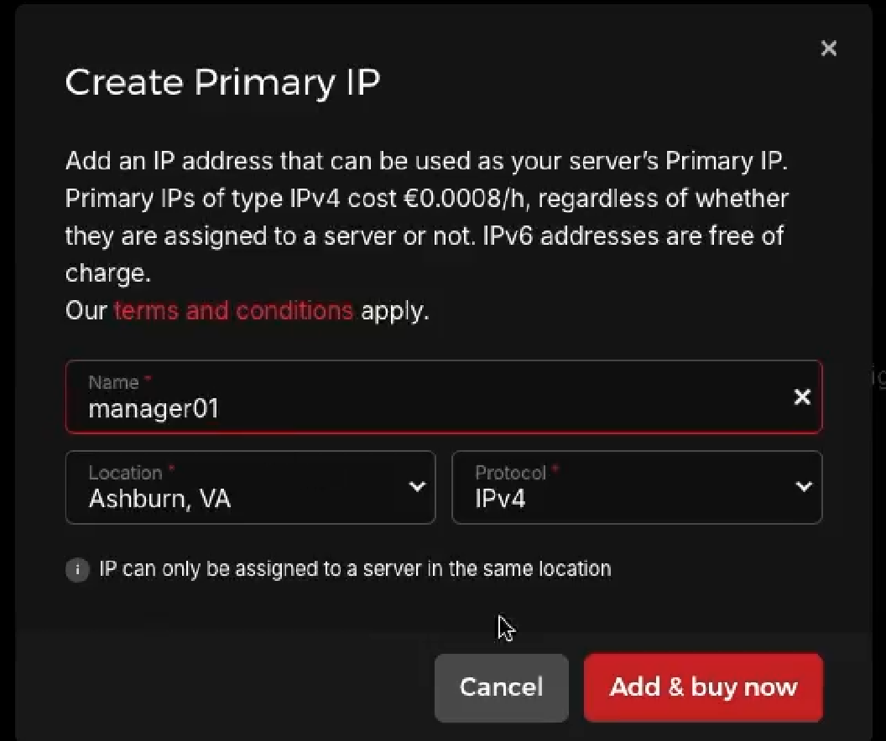Faça uma Network, que é uma rede privada para suas APIs, Escolha us-east
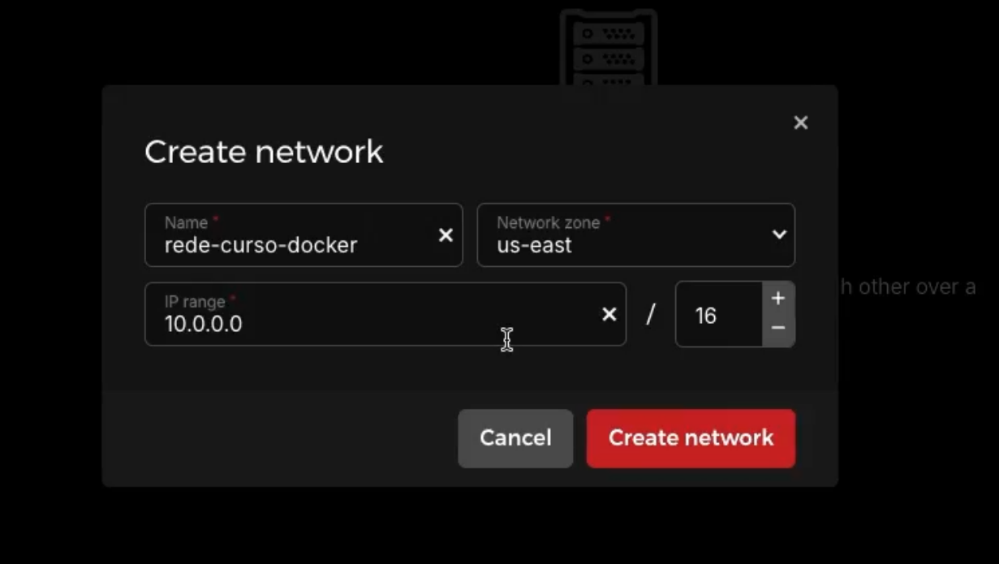Crie um Placement Group, que é um sistema que toda vez que você criar uma nova VPS ele vai alocar em uma maquina fisica diferente, para se caso uma das suas VPSs estiver em manutenção somente ela vai sair do ar e não as outras
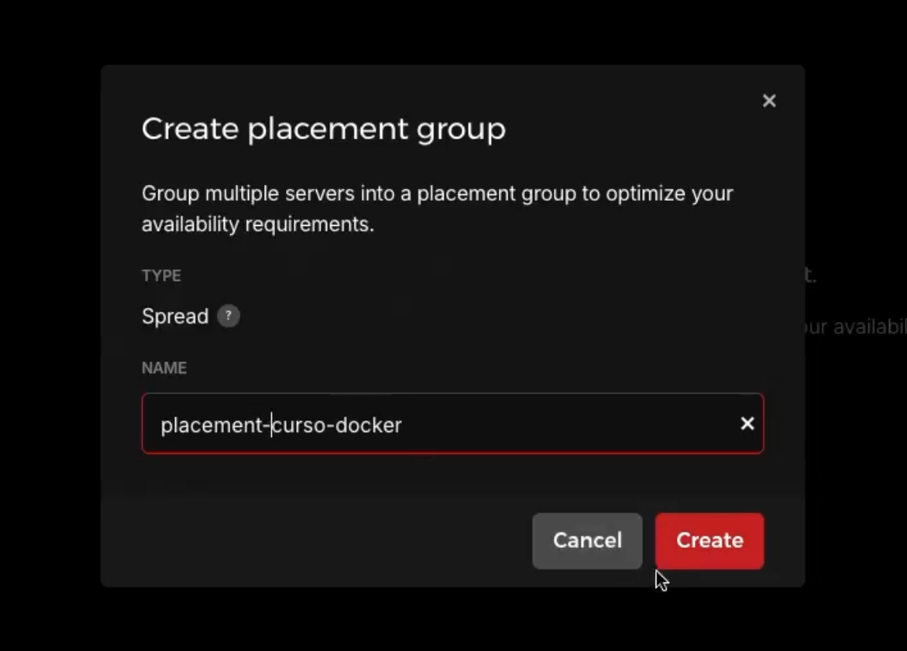 -
Aula 03 - Criando uma VPS na Hetzner
Clique em Add Server
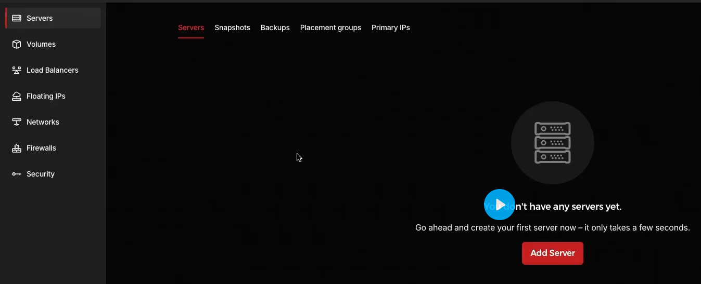Escolha Ashburn, VA us-east e o sistema Debian
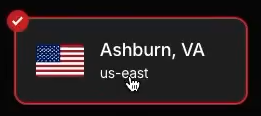 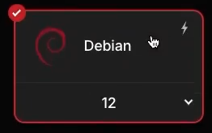Escolha x86 (Intel/AMD) e o plano que você quer usar, se é compartilhado ( Performance Variada Boa Para testes ) ou Dedicada ( Performance Fixa e mais caro, boa para produção )
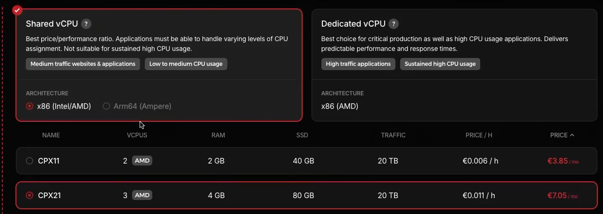O mínimo compartilhado recomendado é esse
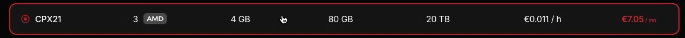Escolha o Ipv4 que você alocou para essa VPS
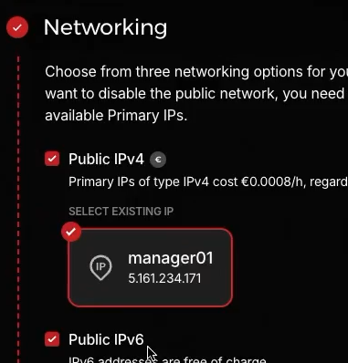 Sempre Desmarcar o Ipv6Escolha a rede privada que você criou mais cedo
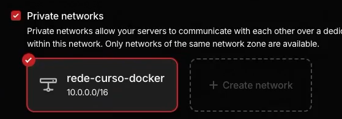A chave SSH é um item muito sensível, por isso não por no painel do servidor
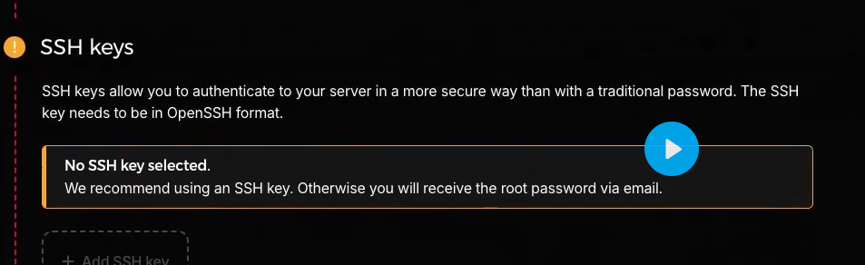No modulo 1 não será abordado nem firewall e nem volumes
Escolha o Placemente Group que você criou anteriormente
Sempre habilite o Backup
Não usaremos Labels Nem Cloud Configs
O Nome é Importante, a sua primeira máquina deverá chamar Manager01 porque a primeira máquina sempre vai ser um manager
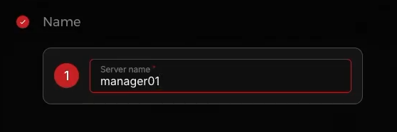 -
Aula 04 - Configurando a Senha da VPS na Hetzner
testtesttestsetstsetsetest
-
Aula 05 - Configurando uma VPS para Banco de Dados
testtesttestsetstsetsetest
-
Aula 06 - Visão Geral da VPS da Hetzner
testtesttestsetstsetsetest
-
Aula 07 - Configurando um Backup na Hetzner
testtesttestsetstsetsetest
-
Aula 08 - Restaurando um Backup na Hetzner
testtesttestsetstsetsetest
-
Aula 09 - Configurando um Snapshot na Hetzner
testtesttestsetstsetsetest
-
Aula 10 - Restaurando um Snapshot na Hetzner
testtesttestsetstsetsetest
-
Aula 11 - Upgrade da VPS na Hetzner
testtesttestsetstsetsetest
-
Aula 12 - Formatando uma VPS na Hetzner
testtesttestsetstsetsetest
-
Aula 13 - Apagando VPS na Hetzner
testtesttestsetstsetsetest